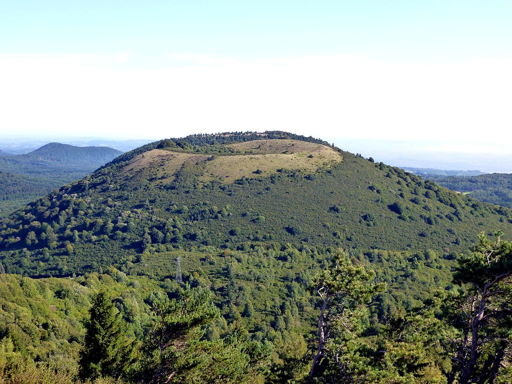

Vous pourrez visiter les villes suivantes, dans cet ordre c'est mieux :
Depuis Brioude, vous arriverez assez vite dans le Cantal.
N'oubliez pas d'aller voir le Viaduc de Garabit,et surtout les volcans d'Auvergne !
Voici la description de plusieurs routes que nous vous proposons :
Le pays d'Auge
Vous passerez par Cabourg, Deauville et Honfleur.
Les plages du Jour J
Vous pourrez visiter par exemple Omaha Beach et Utah Beach.